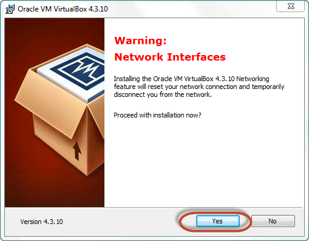
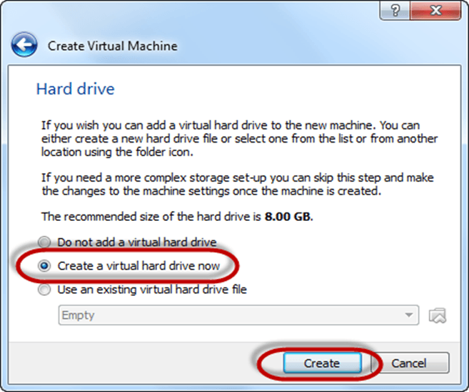

How to Install Linux
Installing Linux using USB stick
This is one of the easiest methods of installing Ubuntu or any distribution on your computer. Follow the steps to install Ubuntu from USB.
Step 1) Download the .iso or the OS files on your computer from this link.
Step 2) Download free software like 'Universal USB installer' to make a bootable USB stick.

Step 3) Select an Ubuntu Distribution form the dropdown to put on your USB
Select your Ubuntu iso file download in step 1.
Select the drive letter of USB to install Ubuntu and Press create button.

Step 4) Click YES to Install Ubuntu in USB.

Step 5) After everything has been installed and configured, a small window will appear Congratulations! You now have Ubuntu on a USB stick, bootable and ready to go.

PART A) Download and Install Virtual Box Download Virtual box using this link Depending on your processor and OS, select the appropriate package. In our case, we have selected Windows with AMD
Once the download is complete, Open setup file and follow the steps below:
Step-1) Click On next

Step-2) Select you're the directory to install VirtualBox and click on next

Step-3) Select Desktop icon and click on next, now click on yes
Step-4) Click On install to install Linux on Windows.

Step-5) Now installation of the virtual box will start. Once complete, click on Finish Button to start Virtual Box
The virtual box dashboard looks like this-

PART C) Create a Machine in Virtual Box
Step-1) Open Virtual box and click on new button
Step-2) In next window, give the name of your OS which you are installing in virtual box. And select OS like Linux and version as Ubuntu 32 bit. And click on next
Step-3) Now Allocate Ram Size To your Virtual OS. I recommended keeping 1024mb (1 GB) ram to run Ubuntu better. And click on next.
Step-4) Now To run OS in virtual box we have to create virtual hard disk, click on create a virtual hard drive now and click on create button. The virtual hard disk is where the OS installation files and data/applications you create/install in this Ubuntu machine will reside
Step-5) select VHD (virtual hard disk) option and click on next.

Step-6) Click on dynamic allocated and click on next. This means that the size of the disk will increase dynamically as per requirement.

Step-7) Allocate memory to your virtual hard drive .8GB recommended. Click on create button.

Step-8) Now you can see the machine name in left panel

PART D) How to Install Ubuntu
Step 1) Select the Machine and Click on Start
Step 2) Select the Folder Option

Step 3) Select the Ubuntu iso file

Step 4) Click Start
Step-5) You have an option to Run Ubuntu WITHOUT installing. In this tutorial will install Ubuntu

Step-6) Click continue.

Step-7) Select option to erase the disk and install Ubuntu and click on install now. This option installs Ubuntu into our virtual hard drive which is we made earlier. It will not harm your PC or Windows installation
Step-8) Select your location for setting up time zone, and click on continue
Step-9) Select your keyboard layout, by default English (US) is selected but if you want to change then, you can select in the list. And click on continue
Step-10) Select your username and password for your Ubuntu admin account. This information has been needed for installing any software package into Ubuntu and also for login to your OS. Fill up your details and tick on login automatically to ignore login attempt and click on continue

Step-11) Installation process starts. May take up to 30 minutes. Please wait until installation process completes.

Step-12) After finishing the installation, you will see Ubuntu Desktop.